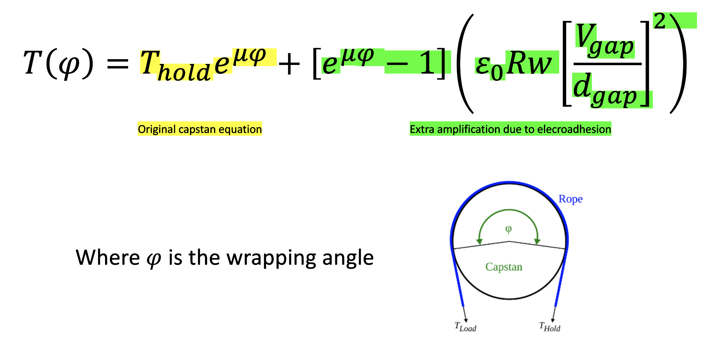
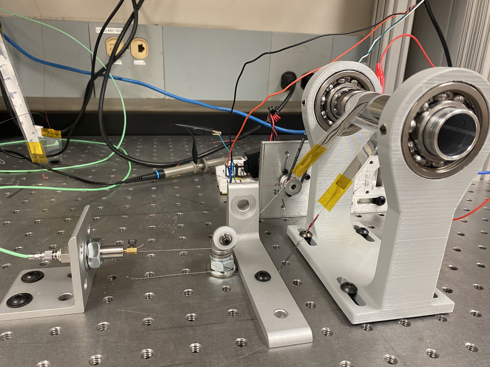
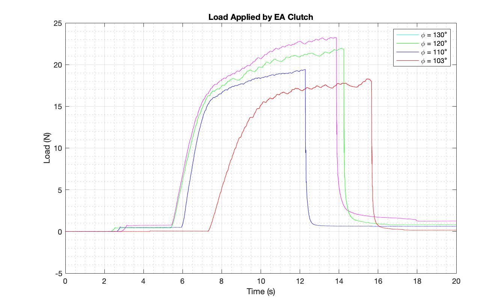
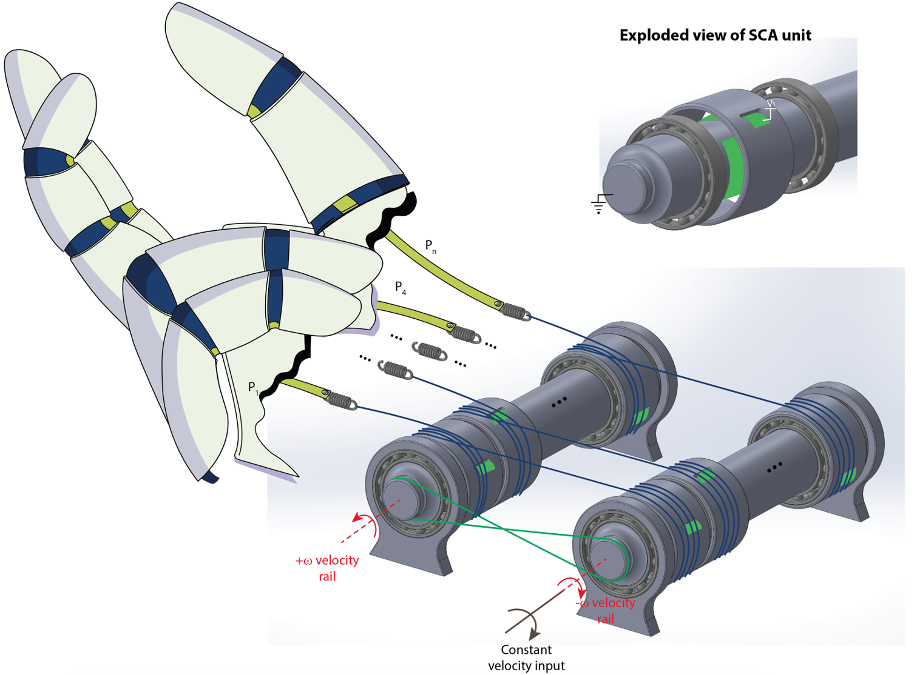

Capstan-Amplified Electroadhesive Clutches
Wrapping a thin-film electroadhesive clutch around a capstan multiplies its holding force, enabling robots that are strong yet still backdrivable.
My part: I derived the capstan model for electroadhesive clutches and built the test rigs and actuators that validated it. I’m also on the provisional patent application.
The capstan effect
My thesis combined the capstan effect, the exponential growth in holding force when a rope wraps around a post, with electroadhesive clutches. The goal: high-force, high-displacement actuators for robotics.
I built a static model of how electroadhesion changes the capstan effect and derived a new capstan equation from it (right).

Experiments


To test the model, I designed a rig that measures pulling force at different wrap angles. I machined a low-friction setup around a rotating polished aluminum rod, designed flexible clutches that could be actuated at high voltage, and built a circuit that outputs a square wave modulating electroadhesion between −200 V and +200 V. A load cell measured the force the clutch amplified.
The build drew on circuitry, machining, mechatronics and 3D printing, with Python and MATLAB for control and data collection. Across trials at different angles, the measured amplification matched the shape predicted by the derived equation.
Implementation
To show how the effect could be used in practice, I designed a load transfer device that demonstrates a high-force, high-displacement actuator.

Robotic hand demo
A backdrivable robotic hand built with capstan-amplified electroadhesive clutches, shown in spring-compensation, compliant and adaptive grasping modes. Supplementary Video 1 from our npj Robotics paper.
Thesis prototype
Published: Aksoy, B., Shilati, A., Forbes, B., et al. Strong yet backdrivable robots through capstan-amplified electroadhesive clutches. npj Robotics 4, 23 (2026). Provisional patent “Low-Inertia Thin Film Clutches” (No. 63/622,403) pending.